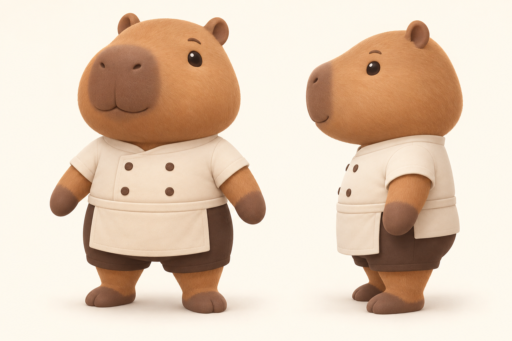
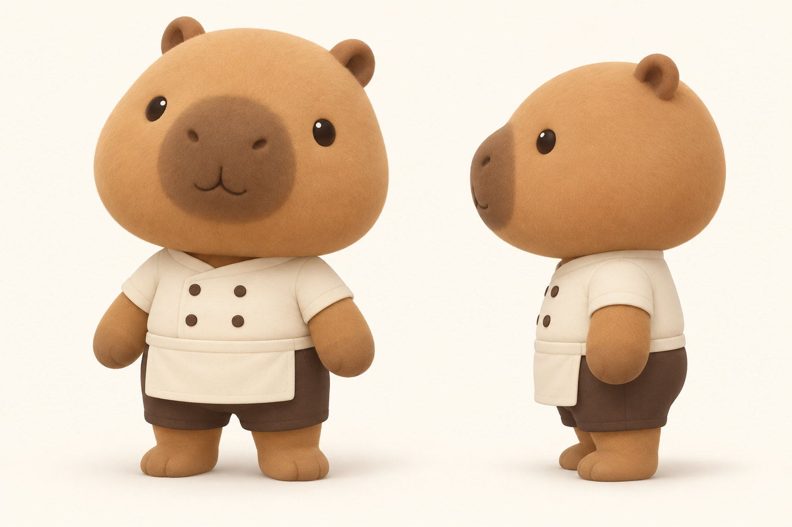
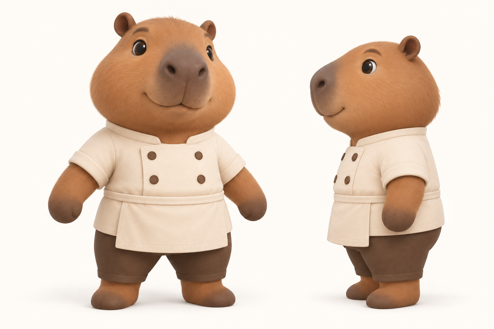

Bara Kitchen · Concept review 02 · Click any image to inspect the shape and side profile.New: two slimmer versions of C →

Plump, round, and compact, with a little facial volume.

SURIYUN-inspired softness, simpler face, small connected limbs.
The shortest, broadest silhouette and bold cartoon shapes.

More continuity with the original face, with corrected proportions.